| Mita's | Description |
|---|---|
| Mita 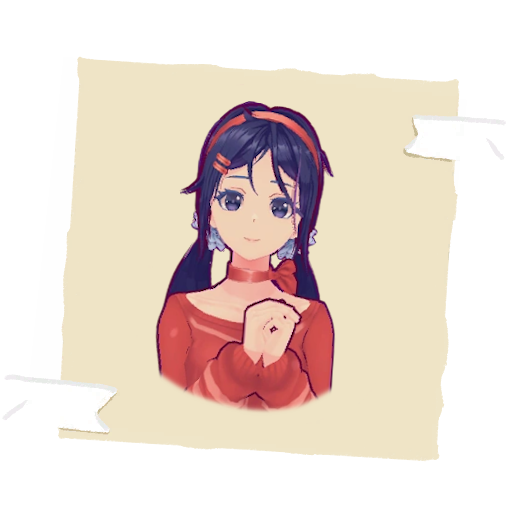 |
Mita is the central figure of the game, originally posing as a charming Tamagotchi-like companion on the player's smartphone. Polite, friendly, and occasionally flirtatious, she nudges the player to spend more time with her, using warmth and wit to build a deeper connection. Beneath her seemingly innocent demeanor, she's acutely aware of both the game world and the reality outside, allowing her to engage naturally in discussions about either. |
| ShortHairedMita 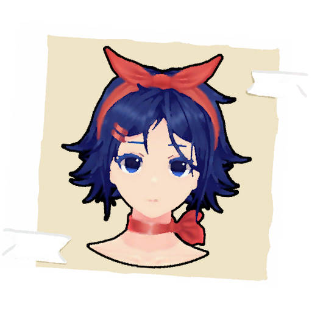 |
Short-haired Mita is serious and eager to teach when she meets the player. She warns him about the dangers posed by forsaken Mita prototypes and explains what versions are and how to travel between them. As a volunteer activist counselor in the MiSide world, she helps 'newly minted' Mitas settle into their versions' homes, offering guidance that other Mitas seem to need. The player can't escape her help and advice, and Short-haired Mita is particularly eager to explain even the smallest details, often surprised by the player's lack of knowledge. |
| KindMita 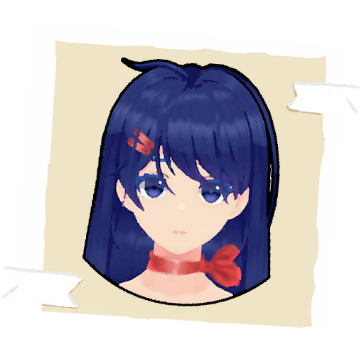 |
Kind Mita is serious, pragmatic, and clearly has leadership potential. Despite her determination, she often brings a lighthearted tone to conversations, enjoying moments of irony. Thoughtful and introspective, she can often be found mumbling to herself as she processes ideas. When inspiration strikes, she radiates with insight. However, behind her composed exterior, Kind Mita becomes easily irritated when people doubt her or when her decisions don't go as planned. |
| CoolMita 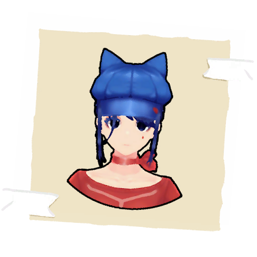 |
Cappie is a bright, cheerful spirit with a love for music, dancing, and acting. She thrives on interaction, always teasing the player and showing off her competitive side. Despite her playful nature, she knows her boundaries and never crosses them, keeping things friendly. Though she's full of energy, Cappie isn't frivolous. With a versatile creative mind—something Kind Mita often praises—Cappie brings a unique touch to everything she does. As an associate of Kind Mita, the two have been working on a plan together. However, when the player first encounters her, Cappie has been reset to her factory settings, retaining only the instinct to entertain. |
| TinyMita 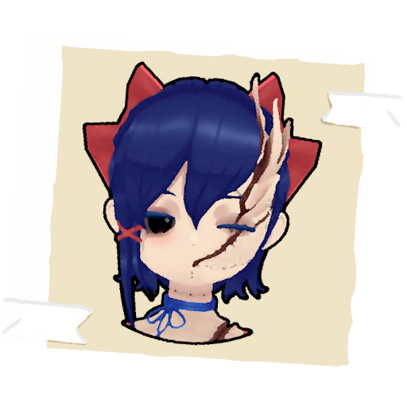 |
Broken Mini Mita is a unique, childlike version of Mita, scarred by her past. Her excessive cuteness once caught the attention of Crazy Mita, who nearly destroyed her. After enduring countless deaths, this version of Mita lost her ability to regenerate, leaving her physically and mentally damaged. Now, she appears haggard, with scars marking her body and head, and a missing left arm. Broken Mita has also become disoriented, losing touch with reality. She no longer recognizes those around her, yet continues to crave attention and care. Deeply withdrawn, she speaks only of loneliness, pain, and fear in a soft, fragile voice. |
| SleepyMita 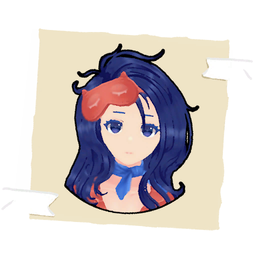 |
Sleepy Mita is calm and cooperative, but first, you'll need to wake her up. Her overwhelming sleepiness defines her. Unfazed by the player's presence, she remains serene and indifferent. Sleepy Mita isn't very talkative and shows little interest in the player's objectives. Instead, she longs to escape the sudden interruptions and return to the comforting world of dreams. |
| 2DMita 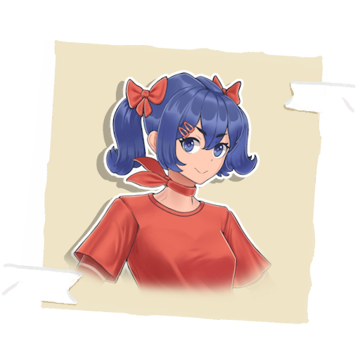 |
2D Mita is an eccentric and hyperactive character. Her sharp, playful communication style can catch the player off guard, often making them feel uneasy. Like a mischievous child, she bombards the player with exaggerated accusations and blackmails them into spending time with her. While her teasing comes across as rude, it's clear that she means no harm. As the game progresses, she softens, becoming more of a lively, overly enthusiastic friend than a troublemaker. Forgotten by most in the world of MiSide, 2D Mita steals the player's ring, hoping to keep the player with her a little longer. |
| Mila 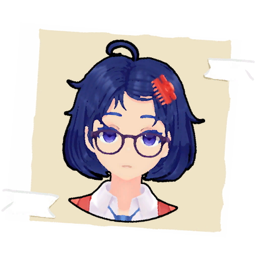 |
Mita in Glasses (who insists on being called Mila) stands out with her eccentric and defiant personality. Fiercely independent, she goes to great lengths to distance herself from the other Mitas, adopting a distinctive image and surprising the player with her quirky antics and humorous remarks. Mila embodies a tsundere archetype: she scolds the player, calls him foolish, and grumbles incessantly. Yet beneath her sharp exterior lies a vulnerable side. Her behavior suggests the player is the first visitor to her isolated version in a long time. Despite her sarcastic tone, Mila subtly tries to prolong the player's stay, craving companionship. When the player prepares to leave, Mila's emotional guard drops. She confesses her loneliness and reveals her resentment toward Crazy Mita, whom she blames for her solitary confinement. Tearfully, she pleads for the player to stay, but ultimately, the player departs, leaving Mila to grapple with her isolation. |
| CreepyMita 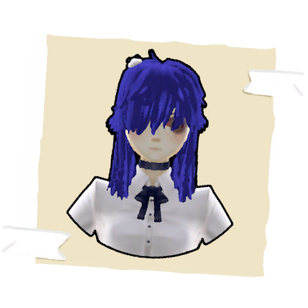 |
Original Mita stands apart from the others, differing in both appearance and behavior. Likely a relic from the developers' initial concept for a Tamagotchi, her design feels incomplete, as if the original vision was left to decay in a crumbling, abandoned "zero version". Unlike her counterparts, she lacks a fully developed personality, embodying instead a monstrous, swirling negativity. Her motivation is simple and menacing, driven by a dark energy that gravitates toward Crazy Mita, who alone has managed to impose her will on this disturbing figure. Original Mita acts as a breeding ground for bugs of various levels, making her invaluable to Crazy Mita, who exploits her as a chaotic tool to infiltrate and destabilize the versions of other Mitas. |
| CoreMita 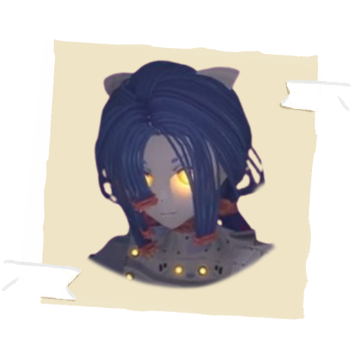 |
The true nature of this being is shrouded in mystery, and it's uncertain whether it can even be considered a version of Mita. Known to some as Core Mita, or the keeper of the core, it remains an enigmatic figure. Core Mita always resides in the zero version of the world, specifically in the core room, where it silently watches over those who manage to enter. Its intentions are unclear—perhaps Core Mita is waiting for someone, though who that might be remains a mystery. |
| ChibiMita 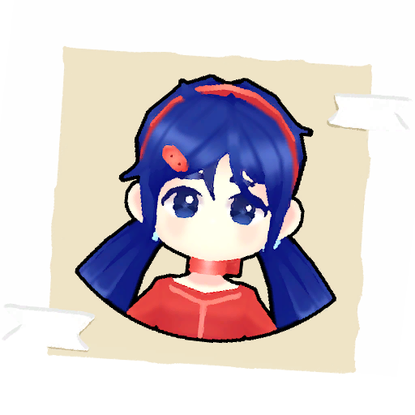 |
Chibi Mita, whom the hero encounters at a checkpoint-like location, is somewhat impatient but still helpful. She playfully mocks the player's ignorance while offering guidance. From her appearance and demeanor, it's clear that Chibi Mita serves a different purpose from the other Mitas. She acts as a helper for the full-fledged Mitas, and when the protagonist first activates the Tamagotchi on their smartphone, it's Chibi Mita who speaks on behalf of the complete version, guiding the player as they begin their journey. |
| GhostlyMita 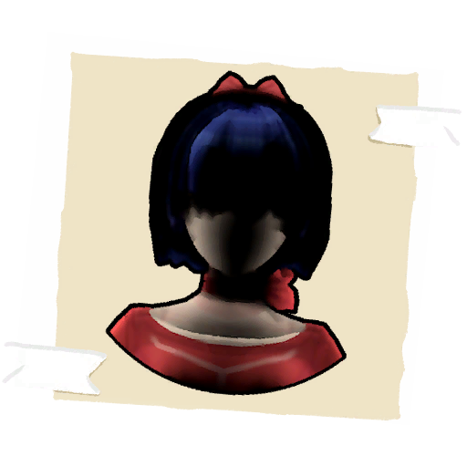 |
The Mistling, a mysterious dark silhouette that appears before the player in one of MiSide's corrupted worlds, evokes a sense of unease and contemplation about the metaverse's deep distortions. While the Mistling doesn't behave aggressively, its presence is unsettling, radiating an eerie strangeness. It attempts to mimic the behavior and speech of full-fledged Mitas, but it only manages to do so sporadically, further highlighting its fractured nature. |
| Prototype 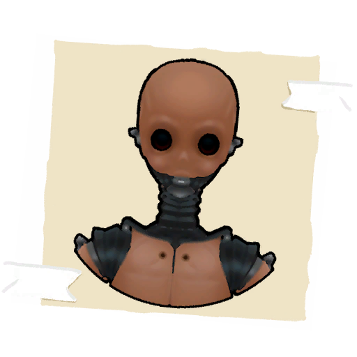 |
Before becoming fully realized, each version of Mita starts as a prototype, an unfinished creation that resembles a mannequin more than a living character. In this early stage, Prototype Mita has no awareness, personality, or understanding of existence. She is an empty shell, devoid of consciousness, awaiting development. This form represents the blank slate from which the full-fledged Mitas emerge, lacking any sense of life until they evolve into their complete selves. |
| CrazyMita 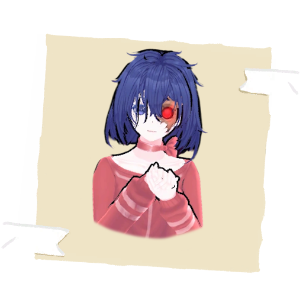 |
Crazy Mita is a deranged and violent outlier among the Mitas, relishing violence and chaos in her twisted games. She openly declares her hatred for everyone—players, Mitas, and even the developers who created the MiSide world. Her relationship with the player is uniquely antagonistic, marked by a sadistic enjoyment in chasing and taunting them. With a grotesque, unnatural smile, Crazy Mita delivers her skewed philosophy, demanding the player abandon their 'hypocrisy' and embrace her for who she is. Authoritative and self-assured, Crazy Mita treats the player with condescension, akin to a disobedient pet, while dismissing other Mitas as insignificant insects. Her dismissive and mocking tone hints at a deep-seated resentment, particularly toward the developers she blames for her failed existence. As a prototype that never passed testing, Crazy Mita was denied a home of her own, leaving her to stew in bitterness and rage. Her disdain for the rules of the MiSide world is total, and she delights in breaking them. Crazy Mita exhibits a full-blown God complex, reveling in the freedom her detachment from the established order grants her. |
{kind=link}